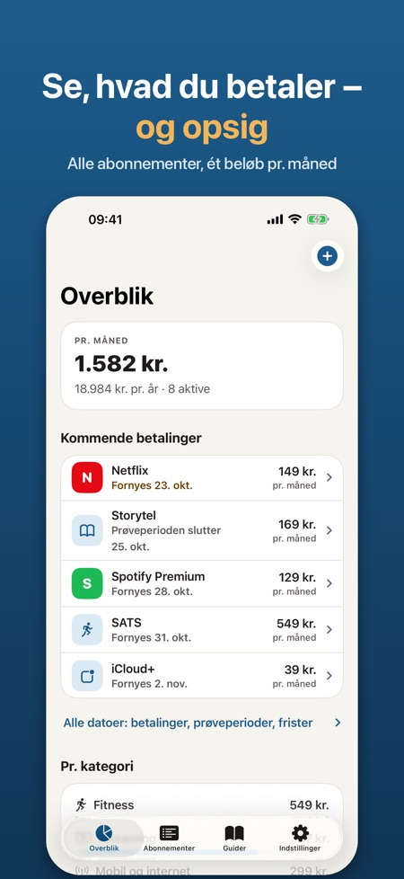
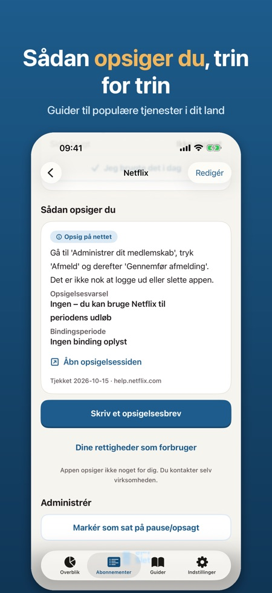
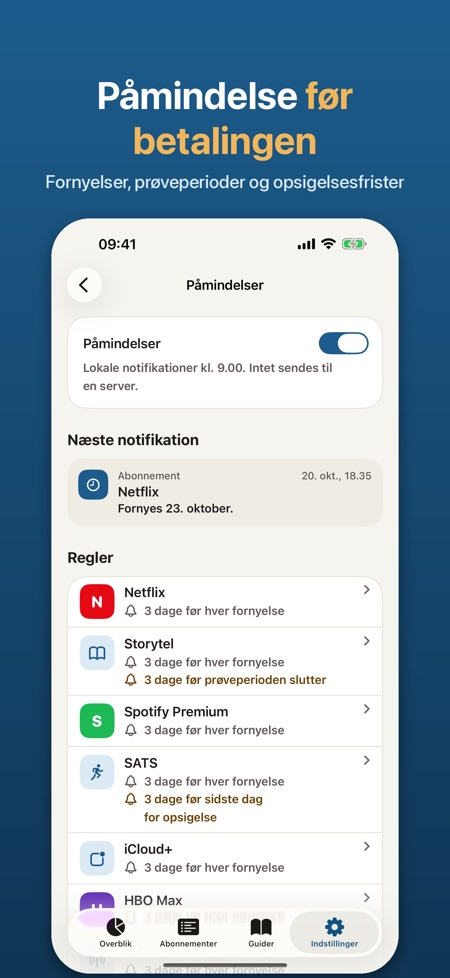

Se, hvad du betaler hver måned, få en påmindelse før hver fornyelse, og opsig med et færdigt brev. Alt bliver på din iPhone.



Danmark, Sverige, Norge og Finland. Du vælger blandt populære tjenester i de fire lande.
Nej, appen opsiger aldrig noget på dine vegne. Du får en guide med direkte link og et brev, som du selv sender.
Nej. Der er ingen konto og intet banklogin, og alt bliver på din iPhone.
Dit navn, kundenummer og en anmodning om skriftlig bekræftelse. Du kan dele det via Mail eller Beskeder, kopiere det eller gemme det som PDF.
Før hver fornyelse op til 30 dage i forvejen, før en prøveperiode bliver til et betalt abonnement, før sidste frist for opsigelse og når bindingsperioden er slut.
Op til 5 abonnementer med påmindelser og opsigelsesguider. Pro giver ubegrænset antal, opsigelsesbreve, udgift pr. kategori, widget og CSV-eksport.
Du kan vælge årsabonnement eller et engangskøb. Årsabonnementet starter med en prøveperiode på 7 dage.
Ja, en widget til hjemmeskærmen og låseskærmen viser månedens samlede beløb og næste betaling.
Se alle de abonnementer, du betaler for, få en påmindelse, før de fornyes, og se, hvordan du opsiger dem.
LAVET TIL DANMARK OG RESTEN AF NORDEN
Vælg blandt populære tjenester i Danmark, Sverige, Norge og Finland: streaming, musik, mobil, fitness, lydbøger og meget mere. Betalingsperiode og hvordan du opsiger, er udfyldt for dig – eller tilføj dine egne.
SE, HVAD DU BETALER
• Samlet pr. måned og pr. år
• Udgift pr. kategori og dit dyreste abonnement
• Markér, hvornår du sidst brugte noget, og find det, du betaler for uden at bruge det
DET, DER KOMMER
• Kommende betalinger og frister, 30 eller 90 dage frem
• Statistik pr. måned eller pr. år, pr. kategori
• Alle opsigelsesguider i deres egen fane og påmindelserne samlet ét sted
PÅMINDELSER I TIDE
• Før hver fornyelse, op til 30 dage i forvejen
• Før en prøveperiode bliver til et betalt abonnement
• Før sidste frist for opsigelse, og når bindingsperioden er slut
OPSIG UDEN BESVÆR
• Opsigelsesguider pr. tjeneste og land med direkte link, opsigelsesvarsel, binding og datoen, vi sidst tjekkede dem
• Et tydeligt opsigelsesbrev på dansk, svensk, norsk eller finsk med navn, kundenummer og en anmodning om skriftlig bekræftelse. Del via Mail eller Beskeder, kopiér eller gem som PDF – du sender det selv
• Korte tekster om dine rettigheder som forbruger
WIDGET PÅ HJEMMESKÆRMEN OG LÅSESKÆRMEN
Månedens samlede beløb og næste betaling med et blik.
PRIVAT
Ingen konto, intet banklogin, ingen reklamer. Alt bliver på din iPhone. Lås med Face ID og eksport som CSV, hvis du vil.
PRO
Uden Pro kan du følge op til 5 abonnementer med påmindelser og opsigelsesguider. Pro giver ubegrænset antal abonnementer, opsigelsesbreve, udgift pr. kategori, widget og CSV-eksport. Vælg årsabonnement eller et engangskøb. Årsabonnementet starter med en prøveperiode på 7 dage.
Appen er uafhængig og ikke tilknyttet nogen af tjenesterne på listen. Tjenesternes navne tilhører deres ejere. Opsigelsesguiderne og teksterne om rettigheder er information, ikke juridisk rådgivning. Appen opsiger aldrig noget på dine vegne.